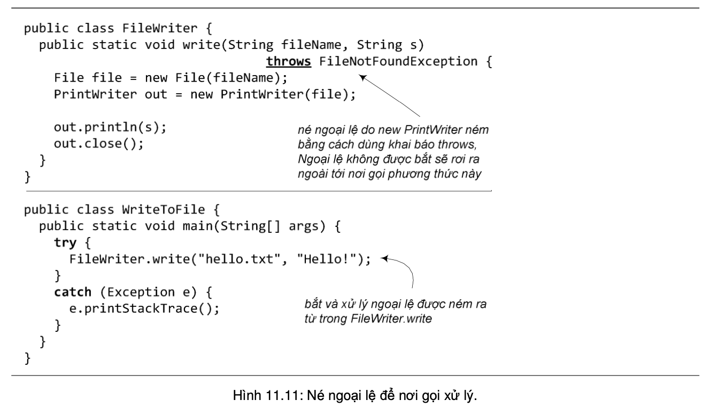
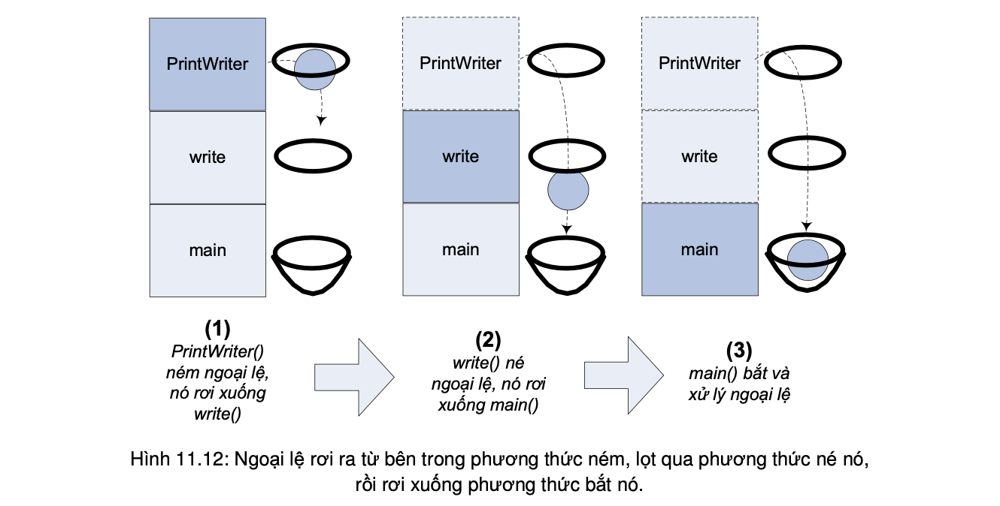

Đôi khi, ta có một phương thức dùng đến những lời gọi hàm có thể phát sinh ngoại lệ, nhưng ta không muốn xử lý một ngoại lệ tại phương thức đó. Khi đó, ta có thể 'né' bằng cách khai báo throws cho loại ngoại lệ đó khi viết định nghĩa phương thức. Kết quả của khai báo throws đối với một loại ngoại lệ là: nếu có một ngoại lệ thuộc loại đó được ném ra bởi một lệnh nằm trong phương thức, nó không được 'đỡ' mà sẽ 'rơi' ra ngoài phương thức, tới nơi gọi phương thức (caller).
Có thể hình dung cơ chế ném, bắt, né như thế này: Ngoại lệ như một đồ vật được ném ra từ phương thức đang chạy – nó nằm trên đỉnh ngăn xếp của các lời gọi phương thức (method call stack). Nó sẽ rơi từ trên xuống. Trong các phương thức đang nằm trong ngăn xếp, phương thức nào né với khai báo throws phù hợp sẽ giống như giương ra một cái lỗ vừa với ngoại lệ để nó lọt qua và rơi tiếp xuống dưới. Phương thức nào bắt với khối try/catch phù hợp giống như giương ra một cái rổ hứng lấy ngoại lệ, nó được bắt để xử lý tại đây nên không rơi xuống tiếp nữa. Tóm lại, sau khi một ngoại lệ được ném, nó rơi từ trên xuống, lọt qua các phương thức có khai báo throws (tính cả phương thức ném nó), và bị giữ lại tại phương thức đầu tiên có khai báo catch bắt được nó. Trong quá trình rơi, nếu nó rơi vào một phương thức không có khai báo throws phù hợp hay khối try/catch phù hợp, nghĩa là phương thức đó không cho nó lọt qua, cũng không lấy rổ hứng, thì trình biên dịch sẽ báo lỗi.
Việc né ngoại lệ thực ra chỉ trì hoãn việc xử lý ngoại lệ chứ không tránh được hoàn toàn. Nếu nơi cuối cùng trong chương trình là hàm main cũng né, ngoại lệ sẽ không được xử lý ở bất cứ khâu nào. Trong trường hợp đó, tuy trình biên dịch sẽ cho qua, nhưng khi chạy chương trình, nếu có ngoại lệ xảy ra, máy ảo Java sẽ ngắt chương trình y như những trường hợp ngoại lệ không được xử lý khác.
Tổng kết lại, quy tắc hành xử mỗi khi gọi một phương thức có thể phát sinh ngoại lệ là: bắt hoặc né. Ta bắt bằng khối try/catch với khối try bọc ngoài đoạn mã sinh ngoại lệ và một khối catch phù hợp với loại ngoại lệ. Ta né bằng khai báo throws cho loại ngoại lệ đó ở đầu phương thức. Phương thức write của FileWriter có hai lựa chọn khi gọi new Printer(File): (1) bắt ngoại lệ như trong Hình 11.5. (2) né ngoại lệ để đẩy trách nhiệm cho nơi gọi nó như trong Hình 11.11. Trách nhiệm nay thuộc về main của WriteToFile.
